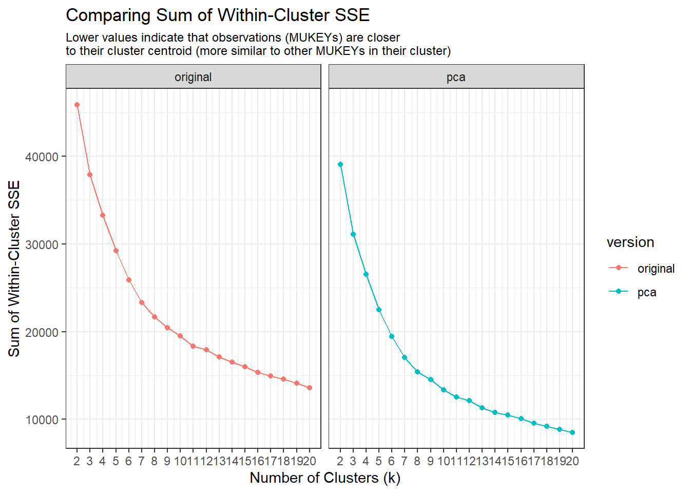
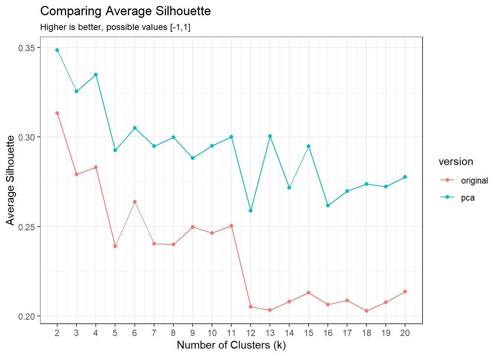
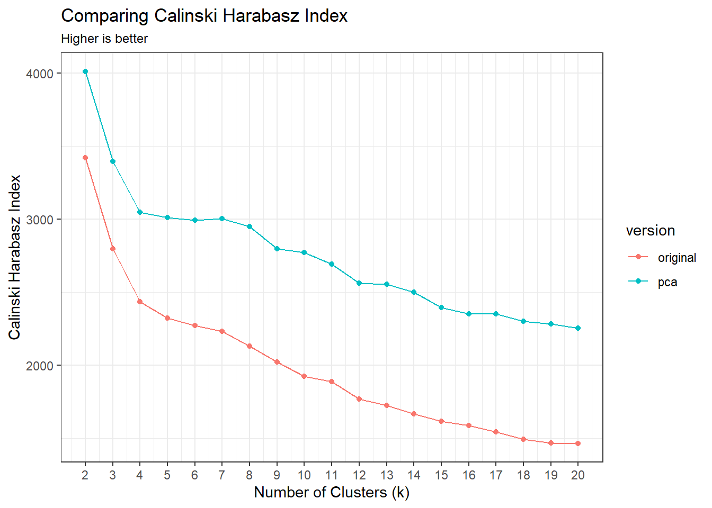

orig_metrics <- read_csv("data/kmeans_cluster_metrics.csv") %>%
mutate(version = "original")
pca_metrics <- read_csv("data/pca_kmeans_cluster_metrics.csv") %>%
mutate(version = "pca")
all_metrics <- bind_rows(orig_metrics, pca_metrics)17 Comparing k-means scenarios
Now that I’ve completed versions of the k-means process with AND without PCA as a data reduction step, I’d like to compare the models. In the reading I did over the course of Jan 10-13, 2023, I found some good examples of other papers where they do this:
Lasantha, V., Oki, T., & Tokuda, D. (2022). Data-Driven versus Köppen–Geiger Systems of Climate Classification. Advances in Meteorology, 2022, e3581299. https://doi.org/10.1155/2022/3581299
Fovell, R. G., & Fovell, M.-Y. C. (1993). Climate Zones of the Conterminous United States Defined Using Cluster Analysis. Journal of Climate, 6(11), 2103–2135. https://doi.org/10.1175/1520-0442(1993)006%3C2103:CZOTCU%3E2.0.CO;2
Green, P. E., & Krieger, A. M. (1995). A comparison of alternative approaches to cluster-based market segmentation. Market Research Society. Journal., 37(3), 1–19. |
17.1 Which clusters are we comparing?
Original k-means: silhouette suggests 6, 9-11. C-H suggests 6, 11. Pairwise comparisons suggest 6, 8, or 11
PCA before k-means: silhouette suggests 4, 6, 8, 11. C-H 4-8 would be similar, 9-11 would be similar
17.2 Compare model metrics
17.2.1 Sum of within-cluster SSE
It doesn’t make sense to plot these two on the same graph, because the errors are in different units (z-score for the original, PCA score for the PCA).

17.2.2 Average Silhouette
From the {tidyclust} documentation:
Another common measure of cluster structure is called the silhouette.
The silhouette of a single observation is proportional to the average distance from that observation to within-cluster observations minus the average distance to outside-cluster observations; normalized by the greater of these two average.
In principle, a large silhouette (close to 1) suggests that an observation is more similar to those within its cluster than those outside its cluster.

17.2.3 Comparing Calinski-Harabasz index
Higher values are better. This is also known as the “Variance Ratio Criterion,”, which is how Calinski & Harabasz refer to it in their 1974 paper introducing it. The paper title is “A dendrite method for cluster analysis”
Nice summary from PyShark:
“The Calinski-Harabasz index (also known as the Variance Ratio Criterion) is calculated as a ratio of the sum of inter-cluster dispersion and the sum of intra-cluster dispersion for all clusters (where the dispersion is the sum of squared distances).
A high CH means better clustering since observations in each cluster are closer together (more dense), while clusters themselves are further away from each other (well separated).”

17.3 Jaccard similarity coefficient
So what am I comparing? Visually, I’d like to make an alluvial plot or Sankey-type plot to see how the two compare (and I did this, see PDFS in _refs/. But I’d also like to compare membership between the different clusterings. In Lasantha et al., (2022), they use the Jaccard similarity coefficient.
“The Jaccard similarity coefficient is the ratio between the intersection and union of two sets; it has values ranging from zero for non-intersection to one for exact similarity. This is index is widely used in the evaluation of similarity in clustering in addition to applications such as image recognition and text analysis” Lasantha et al., 2022
This appears to be the citation for the original coefficient:
P. Jaccard, “The distribution of the flora in the alpine zone zone” New Phytologist, vol. 11, no. 2, pp. 37–50, 1912.
From Tan et al. (2018): “… the simple matching coefficient, which is known as the Rand statistic in this context, and the Jaccard coefficient are two of the most frequently used cluster validity measures.”
Additional relevant Jaccard citation:
Hennig, C. (2007). Cluster-wise assessment of cluster stability. Computational Statistics & Data Analysis, 52(1), 258–271. https://doi.org/10.1016/j.csda.2006.11.025
Tan, P.-N., Steinbach, M., Karpatne, A., & Kumar, V. (2018). Introduction to data mining (2nd ed.). Pearson.
Equation:
Jaccard coefficient = f11 / (f01 + f10 + f11)
| Same Cluster | Different Cluster | |
|---|---|---|
| Same Class | f11 | f10 |
| Different Class | f01 | f00 |
So in words, when we are comparing to sets of classes (like two different clusterings produced by k-means), the Jaccard coefficient is telling us the ratio of : objects that are in both sets (the intersection) divided by the union (total number of objects in both sets, subtracting the number they share)
Apparently the {vegan} package can do this with the vegdist() function, method = 'jaccard' .
The thing I didn’t understand at first was that the Jaccard index is for use on a specific pair of clusters. So I need to do this pairwise for all the clusters in the original and PCA versions
17.3.1 Example from online tutorial
Jaccard index example from UC Riverside GEN 242 Course
source("R/cindex_tgirke.R")
library(cluster)Warning: package 'cluster' was built under R version 4.2.2y <- matrix(rnorm(5000), 1000, 5, dimnames=list(paste("g", 1:1000, sep=""), paste("t", 1:5, sep="")))
clarax <- clara(y, 49)
# length = 1000, 49 classes (numeric 1:49)
clV1 <- clarax$clustering
clarax <- clara(y, 50)
clV2 <- clarax$clustering
ci <- cindex(clV1=clV1, clV2=clV2, self=FALSE, minSZ=1, method="jaccard")
ci[2:3] # Returns Jaccard index and variables used to compute it$variables
a b c
4568 8080 8218
$Jaccard_Index
[1] 0.2189207 n_intersect <- length(intersect(clV1, clV2))
jac_index <- n_intersect/(length(clV1) + length(clV2) - n_intersect)17.3.2 My Jaccard function
This was a helpful blog post (Jaccard Index is quite simple to calculate).
Recall that what I want here is the MUKEYs. That allows us to calculate an intersection (so how many MUKEYs appear in both clusters?).
jaccard <- function(orig_clust, pca_clust, dat, orig_col, pca_col){
orig_sym <- rlang::sym(orig_col)
pca_sym <- rlang::sym(pca_col)
orig_members <- d %>%
filter(!!orig_sym == orig_clust) %>%
pull(mukey)
pca_members <- d %>%
filter(!!pca_sym == pca_clust) %>%
pull(mukey)
n_intersect <- length(intersect(orig_members, pca_members))
jac_index <- n_intersect/(length(orig_members) + length(pca_members) - n_intersect)
return(jac_index)
}Try it for k=6, calculating the Jaccard similarity coefficient for Cluster 1 from the original model set and Cluster 1 from the PCA model set.
To see if the result I’m getting makes sense, I’m looking at the alluvial diagram I made comparing original clusters and the PCA clusters. What I see is that Cluster 1 from the original version is split between Cluster 1 and Cluster 2 in the PCA version, with roughly 2/3 of the MUKEYs shared between Cluster 1 (original) and Cluster 1 (PCA). So it makes sense that the value below is 0.68.
jaccard(orig_clust = "c1",
pca_clust = "p1",
dat = d,
orig_col = "k_6",
pca_col = "pk_6"
)[1] 0.680120517.4 Calculate Jaccard similarity coefficients
I think it makes the most sense to do this with three dataframes, one for each value of K we are interested in evaluating. So that would be: 6, 8, 11.
17.4.1 Set up data structure
# data structure for k=6
clust_orig_k6 <- unique(d$k_6)
clust_pca_k6 <- unique(d$pk_6)
k6_pairs <- tidyr::crossing(k6_orig = clust_orig_k6,
k6_pca = clust_pca_k6)
# data structure for k=8
clust_orig_k8 <- unique(d$k_8)
clust_pca_k8 <- unique(d$pk_8)
k8_pairs <- tidyr::crossing(k8_orig = clust_orig_k8,
k8_pca = clust_pca_k8)
# data structure for k=11
clust_orig_k11 <- unique(d$k_11)
clust_pca_k11 <- unique(d$pk_11)
k11_pairs <- tidyr::crossing(k11_orig = clust_orig_k11,
k11_pca = clust_pca_k11)17.4.2 Map over Jaccard function
jac_k6 <- k6_pairs %>%
mutate(jaccard_coef = map2_dbl(.x = k6_orig,
.y = k6_pca,
.f = jaccard,
dat = d,
orig_col = "k_6",
pca_col = "pk_6"),
k = "k_6") %>%
rename(orig = k6_orig,
pca = k6_pca)
jac_k8 <- k8_pairs %>%
mutate(jaccard_coef = map2_dbl(.x = k8_orig,
.y = k8_pca,
.f = jaccard,
dat = d,
orig_col = "k_8",
pca_col = "pk_8"),
k = "k_8") %>%
rename(orig = k8_orig,
pca = k8_pca)
jac_k11 <- k11_pairs %>%
mutate(jaccard_coef = map2_dbl(.x = k11_orig,
.y = k11_pca,
.f = jaccard,
dat = d,
orig_col = "k_11",
pca_col = "pk_11"),
k = "k_11") %>%
rename(orig = k11_orig,
pca = k11_pca)
jac_all <- bind_rows(jac_k6, jac_k8, jac_k11)
write_csv(jac_all, "data/jaccard_coefficients_k6_k8_k11.csv")17.4.3 Visualize Results
| PCA-6 Clusters | |||||||
|---|---|---|---|---|---|---|---|
| p1 | p2 | p3 | p4 | p5 | p6 | ||
| Full-6 Clusters | c1 | 0.680 | 0.162 | 0.000 | 0.000 | 0.000 | 0.000 |
| c2 | 0.000 | 0.565 | 0.181 | 0.017 | 0.003 | 0.000 | |
| c3 | 0.000 | 0.007 | 0.000 | 0.925 | 0.000 | 0.000 | |
| c4 | 0.000 | 0.000 | 0.621 | 0.009 | 0.013 | 0.000 | |
| c5 | 0.000 | 0.000 | 0.000 | 0.000 | 0.936 | 0.000 | |
| c6 | 0.000 | 0.001 | 0.000 | 0.000 | 0.000 | 0.970 | |
| PCA-8 Clusters | |||||||||
|---|---|---|---|---|---|---|---|---|---|
| p1 | p2 | p3 | p4 | p5 | p6 | p7 | p8 | ||
| Full-8 Clusters | c1 | 0.993 | 0.000 | 0.001 | 0.000 | 0.000 | 0.000 | 0.000 | 0.000 |
| c2 | 0.000 | 0.951 | 0.008 | 0.000 | 0.012 | 0.000 | 0.001 | 0.000 | |
| c3 | 0.002 | 0.002 | 0.973 | 0.000 | 0.000 | 0.000 | 0.000 | 0.000 | |
| c4 | 0.000 | 0.000 | 0.000 | 0.989 | 0.000 | 0.002 | 0.000 | 0.000 | |
| c5 | 0.000 | 0.005 | 0.000 | 0.003 | 0.952 | 0.000 | 0.000 | 0.000 | |
| c6 | 0.000 | 0.002 | 0.000 | 0.000 | 0.000 | 0.982 | 0.000 | 0.000 | |
| c7 | 0.000 | 0.000 | 0.000 | 0.001 | 0.000 | 0.000 | 0.997 | 0.000 | |
| c8 | 0.000 | 0.001 | 0.000 | 0.000 | 0.000 | 0.000 | 0.000 | 0.970 | |
| PCA-11 Clusters | ||||||||||||
|---|---|---|---|---|---|---|---|---|---|---|---|---|
| p1 | p10 | p11 | p2 | p3 | p4 | p5 | p6 | p7 | p8 | p9 | ||
| Full-11 Clusters | c1 | 0.902 | 0.000 | 0.000 | 0.032 | 0.000 | 0.000 | 0.015 | 0.000 | 0.000 | 0.000 | 0.000 |
| c10 | 0.000 | 0.000 | 0.970 | 0.000 | 0.000 | 0.004 | 0.000 | 0.000 | 0.000 | 0.000 | 0.000 | |
| c11 | 0.000 | 0.000 | 0.000 | 0.000 | 0.000 | 0.171 | 0.000 | 0.000 | 0.000 | 0.000 | 0.000 | |
| c2 | 0.001 | 0.000 | 0.000 | 0.845 | 0.000 | 0.017 | 0.013 | 0.000 | 0.000 | 0.000 | 0.000 | |
| c3 | 0.000 | 0.000 | 0.000 | 0.000 | 0.938 | 0.029 | 0.004 | 0.000 | 0.009 | 0.000 | 0.001 | |
| c4 | 0.000 | 0.000 | 0.000 | 0.007 | 0.003 | 0.217 | 0.703 | 0.000 | 0.000 | 0.000 | 0.000 | |
| c5 | 0.000 | 0.000 | 0.000 | 0.000 | 0.000 | 0.000 | 0.000 | 0.987 | 0.001 | 0.000 | 0.000 | |
| c6 | 0.000 | 0.000 | 0.000 | 0.000 | 0.000 | 0.000 | 0.000 | 0.003 | 0.969 | 0.000 | 0.000 | |
| c7 | 0.000 | 0.002 | 0.000 | 0.000 | 0.000 | 0.000 | 0.000 | 0.000 | 0.000 | 0.990 | 0.000 | |
| c8 | 0.000 | 0.000 | 0.000 | 0.000 | 0.000 | 0.016 | 0.000 | 0.001 | 0.000 | 0.000 | 0.973 | |
| c9 | 0.000 | 0.993 | 0.000 | 0.000 | 0.000 | 0.000 | 0.000 | 0.000 | 0.000 | 0.002 | 0.000 | |